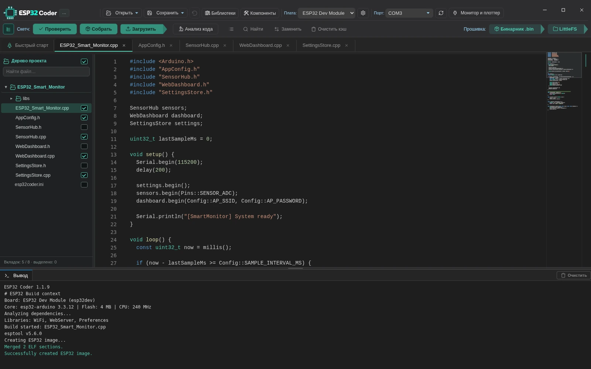
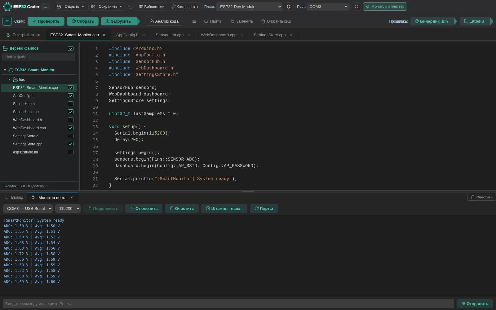
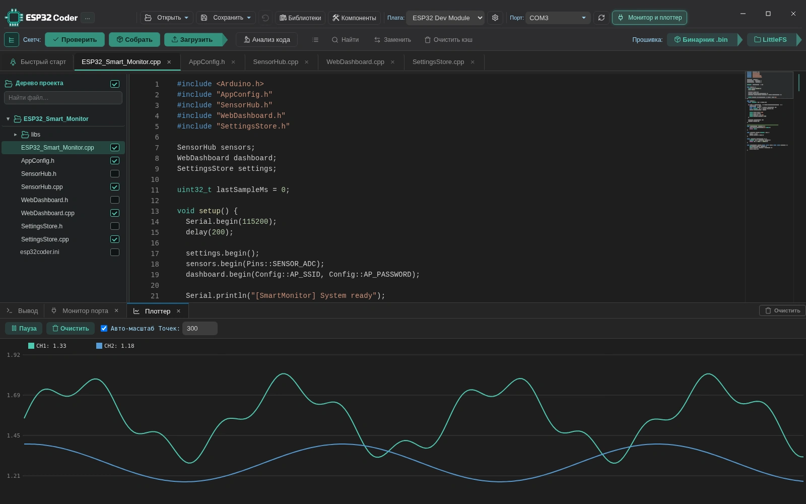

Работает оффлайн и без VPN
Работает без VPN. После установки компонентов — полностью оффлайн.
ESP32 Coder подходит пользователям Arduino IDE и PlatformIO. Простая работа со скетчами, быстрая сборка и никаких обязательных плагинов.
Последняя версия GitHub: проверяем…
Рекомендуем ZIP с папкой ESP32 Coder внутри. Отдельный EXE в релизе — для автообновления.



Привычная разработка ESP32 без сложной настройки.
Работает без VPN. После установки компонентов — полностью оффлайн.
Редактор, компилятор, прошивальщик, монитор и плоттер.
Параллельная сборка, кэш и повторное использование файлов.
Находит зависимости и исключает лишние исходники.
ESP32, S2, S3, C3, C6 и H2 — популярные платы и модули.
Импорт проектов Arduino IDE и PlatformIO с библиотеками.
Обновления библиотек и компонентов отображаются без навязчивых всплывающих окон.
Поиск, импорт, обновление и очистка библиотек прямо в Coder.
Ищи библиотеки на GitHub и через русскоязычное зеркало Trema. Устанавливай прямо в Coder.
Управление библиотеками без ручного копирования.
Импорт из общей папки Arduino IDE.
Определяет нужные проекту библиотеки.
Удаляет неиспользуемые библиотеки после проверки или сборки.
Отдельный набор библиотек для каждого проекта.
Готовый BIN или образ LittleFS можно прошить отдельно, без пересборки.
Выбери BIN и COM-порт — исходники не нужны.
Записывай LittleFS отдельно от прошивки.
Проекты, сборка и прошивка — в одном приложении, без VS Code и других IDE.
Проект, сборка, прошивка и монитор — в одном окне.
Создай проект или импортируй скетч Arduino.
Анализ зависимостей и сборка прошивки.
Запиши BIN по COM; отдельно — LittleFS.
Проверь плату в мониторе и плоттере.
Портативная среда для ESP32. Скачай последнюю версию с GitHub; SDK и toolchain устанавливаются из программы.
ESP32 Coder. Распакуйте её, например, в C:\Dev\ESP32 Coder\, и запустите esp32coder.exe из этой папки. Отдельный EXE предназначен для автообновления. Инструкция ↗Проверяем GitHub Releases…
Открыть последний релиз на GitHub ↗Для установки — ZIP с папкой ESP32 Coder; EXE — для автообновления.Да. После установки необходимых SDK, инструментов и библиотек можно писать код, собирать проекты и прошивать платы оффлайн. Для поиска и загрузки новых библиотек или обновлений потребуется подключение.
Нет. ESP32 Coder — самостоятельное Windows-приложение с русским и английским интерфейсом. Нужные SDK и toolchain устанавливаются отдельно через программу.
Да, если у тебя есть готовый BIN, совместимый с выбранной платой и правильной Flash-разметкой.
Да, предусмотрен отдельный режим записи подготовленного образа LittleFS. Адрес и разметка должны совпадать с прошивкой устройства.
ESP32, ESP32-S2, ESP32-S3, ESP32-C3, ESP32-C6 и ESP32-H2. Доступность конкретной платы и сборки зависит от установленных компонентов.
Загрузи последний релиз на GitHub или используй проверку подписанных обновлений в приложении.